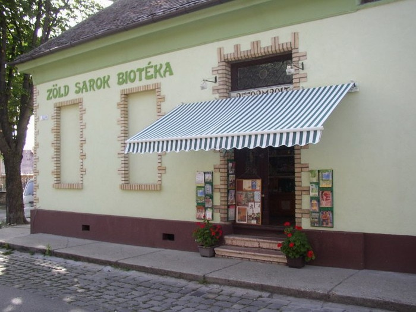

| Hétfő | 10:00 - 17:30 |
| Kedd | 08:00 - 17:30 |
| Szerda | 08:00 - 17:30 |
| Csütörtök | 08:00 - 17:30 |
| Péntek | 08:00 - 17:30 |
| Szombat | 08:00 - 12:30 |
| Vasárnap | Zárva |

Baja város szívében várja minden kedves vásárlóját!
1989 - óta!
Elérhetőségek:
Cím: 6500, Baja, Türr István u. 12.
Tel: 79/324-674
Email: zoldsarokbioteka@gmail.com